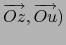
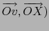
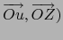

suivant: Les points
monter: Les fonctions de géométrie
précédent: Généralités
Table des matières
Index
Les angles d'Euler
Les angles d'Euler sont utilisés pour modifier le repère de visualisation.
Rappel
Soient deux repères : l'ancien (Oxyz) et le nouveau (OXYZ).
Soit Ou l'intersection du plan (OY, OZ) avec le plan (Ox, Oz) que l'on
oriente arbitrairement.
Soient :
- Ra la rotation d'axe Oy et d'angle
a = ( qui transforme Ox en Ov et Oz en Ou,
- Rb la rotation d'axe Ou et d'angle
b = ( qui transforme Ov en OX et Oy en Ow,
- Rc la rotation d'axe OX et d'angle
c = ( qui transforme Ow en OY et Ou en OZ.
On définit complètement la mise en place de (OXYZ) par rapport à
(Oxyz) en donnant les angles a,b,c de (OXYZ) par rapport
à (Oxyz) et en effectuant la composition de ces trois rotations :
Rc@Rb@Ra.
Les angles d'Euler sont :
a = (,
b = (,
c = (.
Les dessins de la géométrie 3D se font en choissisant comme repère
Oxyz, Ox horizontal dirigé vers la droite, Oy vertical dirigé vers le
haut et l'axe des z qui pointe vers vous.
Les mesures en degré de a, b, c sont mises dans ry, rz, rx.
Selon l'orientation de Ou, les valeurs de a, b, c ne sont pas uniques :
a, b, c et
a + 180, 180 - b, c + 180 mettent en place le même repère OXYZ,
Lorsque b est un angle droit, c'est à dire que l'axe OX et l'axe Oy
ont le même support on n'a pas non plus unicité:
a, 90, c et a + c, 90, 0 mettent en place le même repère OXYZ et
a, - 90, c et a - c, - 90, 0 mettent en place le même repère OXYZ.
On peut donc choisir, l'angle b dans ] - 90, 90[ et les angles a et c
dans
] - 180, 180] ou bien b dans -90, 90 c = 0 et a dans
] - 180, 180].
suivant: Les points
monter: Les fonctions de géométrie
précédent: Généralités
Table des matières
Index
Documentation de giac écrite par Renée De Graeve